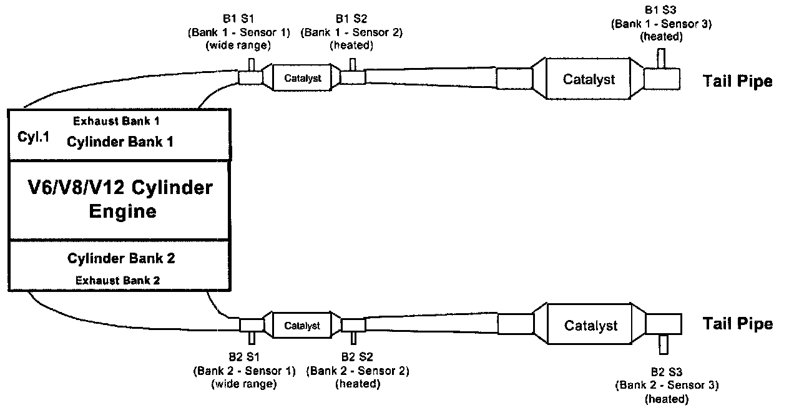
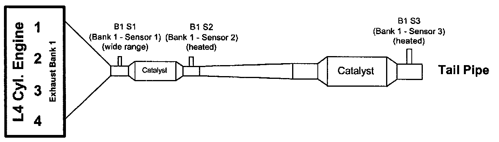
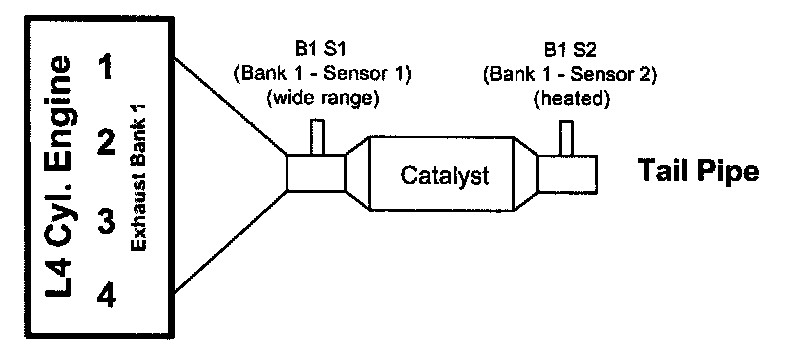

Catalytic Converter: Application and ID
Oxygen Sensor and Catalyst Configuration Example
V6/V8/V12 Engine W/2 Exhaust Banks & 4 Catalysts:

V6/V8/V12 Engine W/2 Exhaust Banks & 3 Catalysts:

L4 Engine W/1 Exhaust Banks & 2 Catalysts:

L4 Engine W/1 Exhaust Banks & 1 Catalysts:
